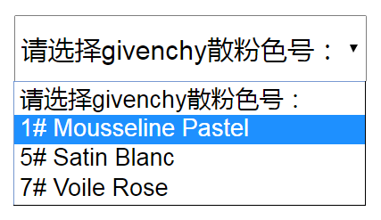
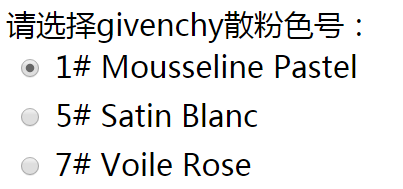
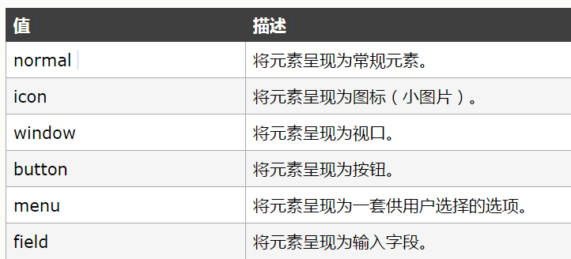
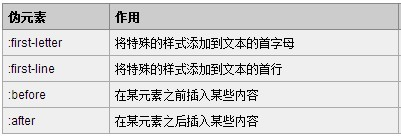
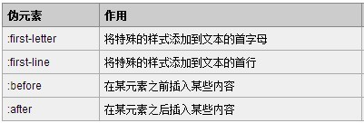

如何改变默认radio和select的样式？
分享人：郭婷婷
目录
1.背景介绍
2.知识剖析
3.常见问题
4.解决方案
5.编码实战
6.扩展思考
7.参考文献
8.更多讨论
1.背景介绍
单选按钮 && 下拉列表
 以上两种展示数据的方式分别由表单元素中的select标签和input标签实现， 其中input元素使用的是radio类型。
demo2.知识剖析
一、form元素
form元素定义 HTML 表单,HTML 表单是一个包含表单元素的区域。
表单元素是允许用户在表单中输入内容,比如：文本输入、下拉列表、单选按钮、复选框等等。
多数情况下被用到的表单标签是输入标签input。
二、radio
先介绍一下input元素，input元素是最重要的表单元素。 input元素在 form元素中使用，用来声明允许用户输入数据的 input 控件。 输入类型是由类型属性（type）定义的，输入类型至少包含23种，大多数经常被用到的输入类型如下： text（文本输入）、password（密码输入）、submit（提交按钮）、button（按钮）、image（图像作为提交按钮） 以及checkbox（复选框）和今天的重点radio（单选按钮）。
三、label
label 标签为 input 元素定义标注（标记）。label 元素不会向用户呈现任何特殊效果。 "for" 属性可把 label 绑定到另外一个元素。只需把 "for" 属性的值设置为相关元素的 id 属性的值。
四、select
select标签用来创建下拉列表。select标签中的 option 标签定义了列表中的可用选项。
3.常见问题
如何修改radio和select的默认样式
4 解决方案
4.1 修改radio默认样式
需要用到的工具如下：
label标签；
:checked 选择器,匹配每个已被选中的 input 元素（只用于单选按钮和复选框）。
兄弟选择器：
1、+ 选择器（相邻兄弟选择器），可选择紧接在另一元素后的元素，且二者有相同父元素。
2、~ 选择器，作用是查找某一个指定元素的后面的所有兄弟结点。
4.2 修改select默认样式
appearance 属性，可以让元素看上去像标准的用户界面元素。

所有主流浏览器都不支持 appearance 属性。
Firefox 支持替代的 -moz-appearance 属性。
Safari 和 Chrome 支持替代的 -webkit-appearance 属性。
5.编码实战
6.扩展思考
伪类和伪元素的区别
 

1. 伪类与伪元素
CSS introduces the concepts of pseudo-elements and pseudo-classes to permit formatting based on information that lies outside the document tree.
直译过来就是：css引入伪类和伪元素概念是为了格式化文档树以外的信息。 也就是说，伪类和伪元素是用来修饰不在文档树中的部分，比如，一句话中的第一个字母，或者是列表中的第一个元素。 下面分别对伪类和伪元素进行解释：
伪类用于当已有元素处于的某个状态时，为其添加对应的样式，这个状态是根据用户行为而动态变化的。比如说，当用户悬停在指定的元素时，我们可以通过:hover来描述这个元素的状态。 虽然它和普通的css类相似，可以为已有的元素添加样式，但是它只有处于dom树无法描述的状态下才能为元素添加样式，所以将其称为伪类。
伪元素用于创建一些不在文档树中的元素，并为其添加样式。比如说，我们可以通过:before来在一个元素前增加一些文本，并为这些文本添加样式。 虽然用户可以看到这些文本，但是这些文本实际上不在文档树中。
2. 伪类与伪元素的区别
- 我是第一个
- 我是第二个
- 我是第一个
- 我是第二个
li.first-item {color: orange}
- 我是第一个
- 我是第二个
li:first-child {color: orange}
如果不用添加类的方法，可以通过给设置第一个li的:first-child伪类来为其添加样式。这个时候，被修饰的li元素依然处于文档树中。
Hello World, and wish you have a good day!
Hello World, and wish you have a good day!
.first {font-size: 5em;}
Hello World, and wish you have a good day!
p:first-letter {font-size: 5em;}
如果不创建一个span>元素，我们可以通过设置p的:first-letter伪元素来为其添加样式。 这个时候，看起来好像是创建了一个虚拟的元素并添加了样式，但实际上文档树中并不存在这个元素。
从上述例子中可以看出，伪类的操作对象是文档树中已有的元素，而伪元素则创建了一个文档数外的元素。因此，伪类与伪元素的区别在于：有没有创建一个文档树之外的元素。
7.参考文献
参考1：W3school
参考2：总结伪类与伪元素
8 更多讨论
鸣谢
感谢大家观看
BY : 郭婷婷